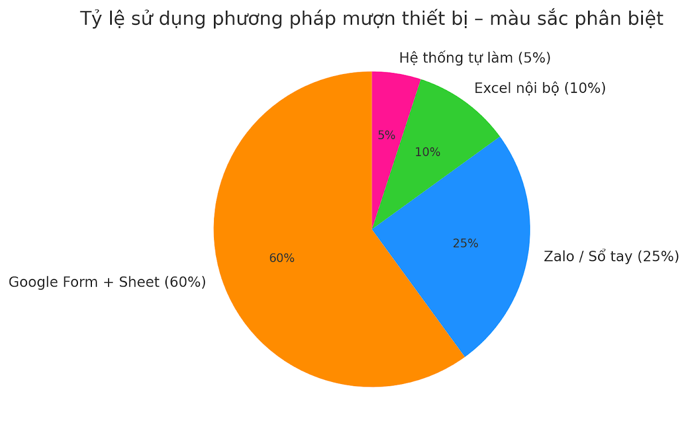

Q1 - Q2
Smart Borrowing
QR mượn nhanh, giảm thao tác tay và rút ngắn thời gian nhận thiết bị.
Hiện tại mượn thiết bị vẫn dựa vào ghi chép thủ công, trao đổi trực tiếp hoặc nhắn tin cá nhân. Giáo viên không biết thiết bị còn hay đã mượn, dễ trùng lịch và mất thời gian tìm kiếm, còn nhân viên kho phải kiểm tra sổ sách và xử lý nhiều yêu cầu lặp lại.

Biểu đồ tỷ lệ hiện tại của quy trình mượn thiết bị trong trường học
Từ những bất cập trên, SEB được xây dựng như một "trợ lý số" cho nhà trường: mọi yêu cầu mượn/trả được ghi nhận tập trung, tra cứu nhanh và theo dõi minh bạch theo thời gian thực. Giáo viên biết ngay thiết bị nào đang sẵn sàng, thiết bị nào đã được đặt trước để chủ động kế hoạch giảng dạy.
Với bộ phận phụ trách thiết bị, SEB giảm đáng kể thao tác thủ công, hạn chế nhầm lẫn khi kiểm kê, đồng thời hỗ trợ xử lý các trường hợp trễ hạn hoặc thất lạc rõ ràng hơn. Mục tiêu cuối cùng là biến quy trình mượn thiết bị thành một trải nghiệm nhanh, gọn và đáng tin cậy cho toàn trường.
SEB được phát triển bằng HTML, CSS và JavaScript thuần, không sử dụng framework phức tạp để đảm bảo tính đơn giản và dễ bảo trì. Hệ thống sử dụng kiến trúc web tĩnh với responsive design, tương thích trên mọi thiết bị (desktop, tablet, mobile).
Giao diện sử dụng màu xanh dương làm chủ đạo (--primary-blue), font Inter, và các icon FontAwesome. Thiết kế clean, minimal với spacing đều đặn và border-radius cho các element.
Flow chính: Trang chủ → Chọn chức năng → Xem chi tiết → Thực hiện hành động (mượn/trả).
SEB có tiềm năng mở rộng thành nền tảng quản lý thiết bị toàn diện cho nhiều trường học. Dự án có thể phát triển thêm tính năng như tích hợp QR code cho mượn nhanh, chatbot hỗ trợ tự động, và hệ thống thông báo qua Zalo.
Q1 - Q2
QR mượn nhanh, giảm thao tác tay và rút ngắn thời gian nhận thiết bị.
Q2 - Q3
Chatbot trả lời câu hỏi lặp lại, hỗ trợ tra cứu trạng thái thiết bị tức thì.
Q3 - Q4
Gửi thông báo qua Zalo/email cho lịch mượn, trễ hạn và nhắc trả thiết bị.
Next Stage
Mở rộng liên trường, chuẩn hóa dữ liệu và tạo hệ sinh thái quản lý thiết bị giáo dục.
Với chi phí thấp và kiến trúc đơn giản, SEB dễ dàng duy trì và nâng cấp. Triển vọng dài hạn là tạo ra hệ sinh thái số hóa cho các hoạt động quản lý thiết bị trong giáo dục, góp phần hiện đại hóa cơ sở vật chất trường học.
Dự án đã được đánh giá cao về hiệu quả, chi phí và trải nghiệm người dùng, với tiềm năng mở rộng sang các trường khác trong hệ thống giáo dục.